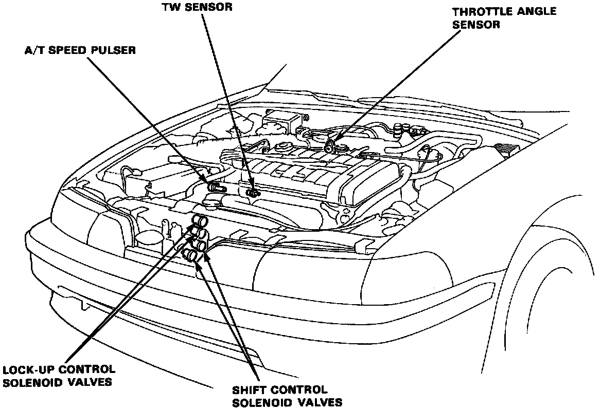

Operation CHARM
: Car repair manuals for everyone.
Home
>>
Acura
>>
1992
>>
Integra L4-1834cc 1.8L DOHC FI
>>
Repair and Diagnosis
>>
Powertrain Management
>>
Transmission Control Systems
>>
Actuators and Solenoids - Transmission and Drivetrain
>>
Actuators and Solenoids - A/T
>>
Torque Converter Clutch Solenoid
>>
Locations
Torque Converter Clutch Solenoid: Locations
